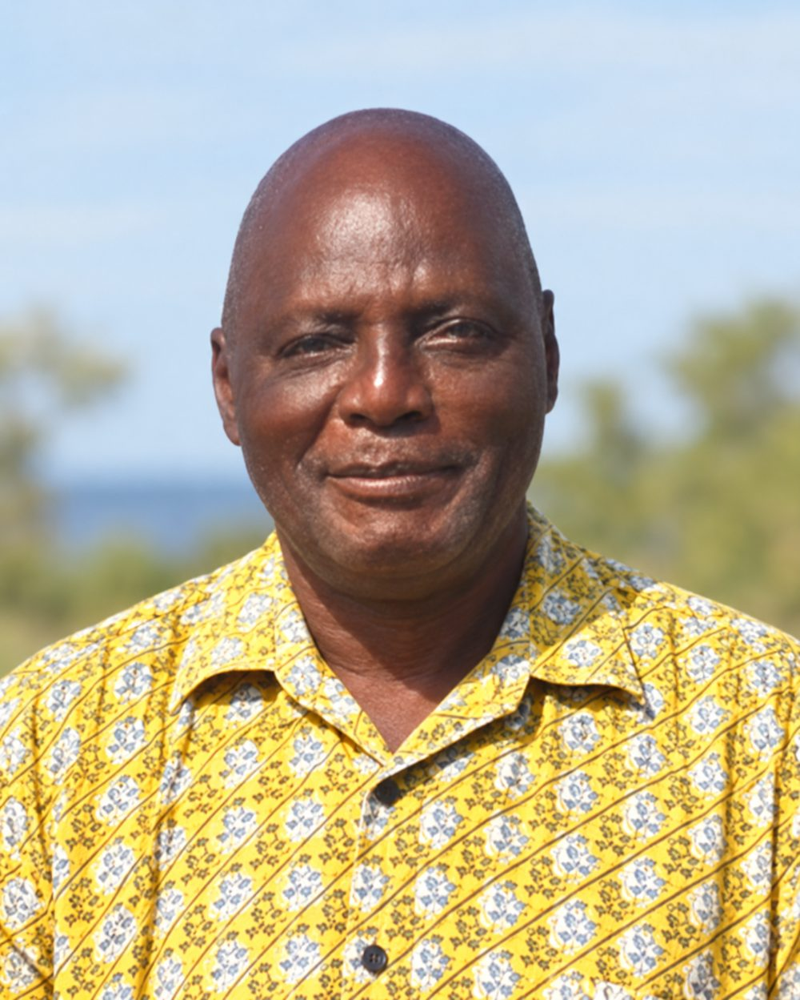
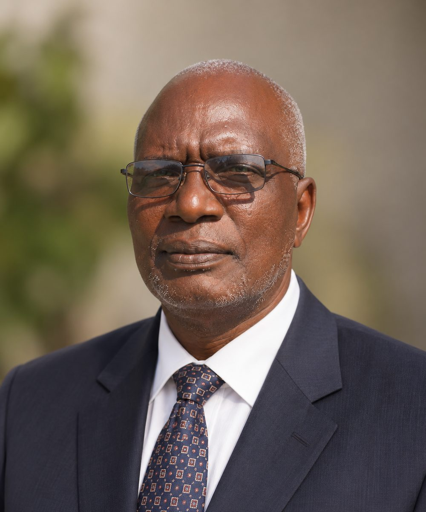
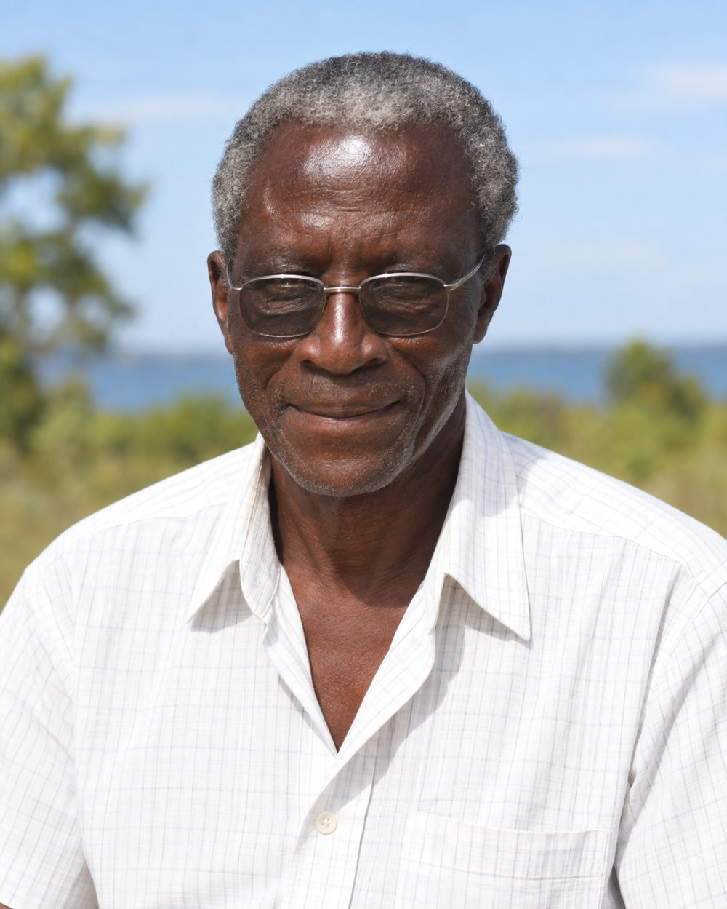
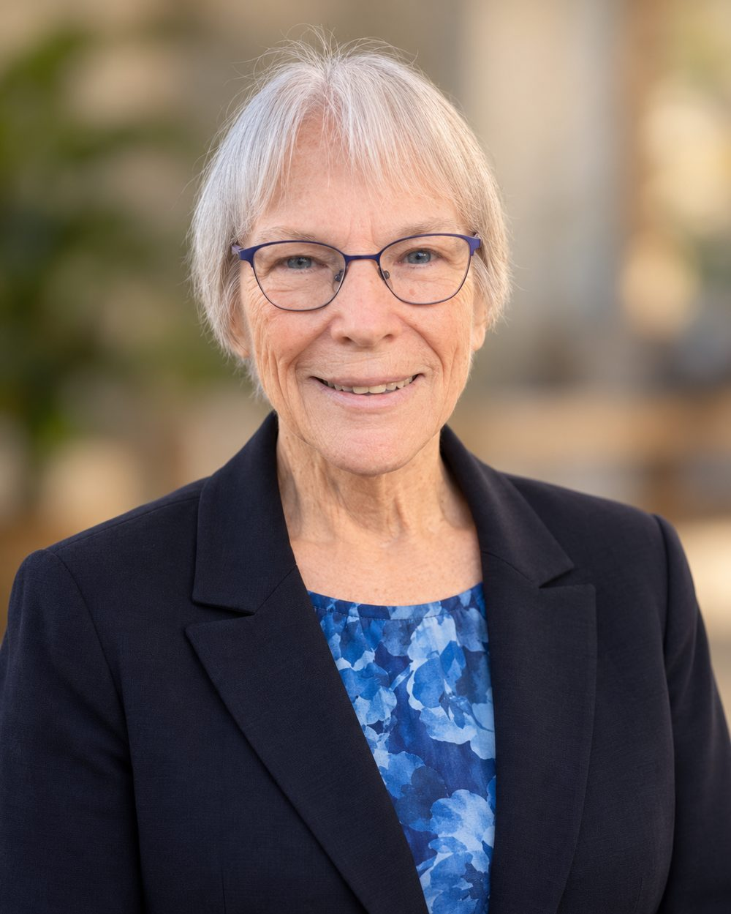

Rev. Manaen Kawira brought decades of experience in education, health administration, government, development programming and church leadership to SHED. Educated at Hesston College, Bluffton College and Ball State University, he was ordained at Shirati Mennonite Church in 1992 and became SHED’s founding chair in 2006.

About
About SHED Foundation
Who SHED is, what it has accomplished, who built it — and why it is a strong organization to partner with or support.
About SHED Foundation
Local leadership. Long-term partnerships. Permanent infrastructure.
Shirati Health, Education and Development Foundation (SHED Foundation) is a Tanzanian nonprofit organization rooted in Shirati and the communities of Rorya District near Lake Victoria. Established in 2005 and formally incorporated in 2006, SHED was created to address a reality its founders knew firsthand: health, education and development cannot be separated. A child cannot learn well without nutrition and health; a health facility cannot function without water and infrastructure; and lasting progress requires communities to have both a voice in the work and the capacity to sustain it.
Over more than two decades, that approach has allowed SHED to grow from a locally founded organization into a platform for significant rural health, education, research and development initiatives. SHED has established and supported permanent health facilities, helped build community water systems, implemented school nutrition and scholarship programs, hosted medical and academic teams, participated in major international research, and developed partnerships with Tanzanian communities, government institutions, hospitals, universities and nonprofit organizations around the world. Long-standing relationships—particularly with Village Life Outreach Project and the University of Cincinnati community—demonstrate SHED’s ability to build partnerships that continue across years and across generations of projects.
SHED’s greatest strength is its position between local communities and larger institutions. It brings local knowledge, relationships, staff, facilities and implementation experience to partnerships while helping universities, donors and technical organizations translate resources and expertise into practical work in rural Tanzania. As SHED enters its third decade, it is strengthening its governance, institutional records, reporting systems and grant capacity so that twenty years of accumulated experience can support an even larger next chapter.
Our Work
Health
Health has been at the center of SHED’s work since its earliest years. Sota Health Clinic began serving patients in 2006 and later moved into a permanent SHED facility. In Roche, SHED and Village Life Outreach Project developed Roche Health Center into an enduring rural health facility serving Roche and surrounding communities. SHED’s work has included outpatient care, maternal and child health, vaccinations, reproductive health, HIV and TB-related services, community health education, mobile medical outreach, referrals and specialized programs addressing diseases with an especially important impact in the Lake Victoria region.
SHED has also demonstrated that a locally based rural organization can serve as a platform for sophisticated national and international collaboration. SHED participated in the multinational EMBLEM study of Burkitt lymphoma with the U.S. National Cancer Institute, National Institutes of Health, Bugando Medical Centre and other research partners, with Dr. Esther Kawira serving as Tanzania’s principal investigator. SHED has hosted visiting physicians, nurses, pharmacists, researchers, students and faculty and has collaborated with universities and health institutions on rural clinical education and public-health work. More recently, SHED’s sickle-cell program and partnership with Shirati KMT Hospital have continued this tradition of connecting donor resources, local institutions and families who need sustained care.
The result is not simply a series of short-term medical missions. SHED’s aim has been to leave behind stronger facilities, trained people, local relationships and systems capable of continuing to serve communities after visiting teams return home.
Our Work
Education
SHED approaches education as both an opportunity in itself and an essential part of healthy community development. Over the years, SHED and its partners have supported schoolchildren through nutrition programs, scholarships, educational assistance, infrastructure and access to clean water at schools. SHED’s school nutrition work has reached thousands of children, while scholarship initiatives have helped students pursue primary, secondary and university education—including opportunities created through the long-standing relationship among SHED, Village Life Outreach Project and the University of Cincinnati.
Education at SHED extends beyond the classroom. The organization has hosted medical students, residents, health professionals, researchers and university faculty for rural clinical training, community-health activities and research. These exchanges create two-way learning: visiting students gain experience in rural health and community development, while Tanzanian staff, students and communities gain access to new professional networks, training and institutional relationships. Partnerships with universities in Tanzania and abroad give SHED an unusually strong foundation for future programs in health-professional education, research and workforce development.
For future donors and partners, SHED offers something valuable: established local relationships and a field platform through which investments in education can connect directly to health, nutrition, infrastructure and long-term opportunity.
Our Work
Development
SHED’s development work is based on a simple principle: services are sustainable only when the infrastructure and community systems beneath them are strong. Working with Village Life Outreach Project, Engineers Without Borders and local village committees, SHED has helped develop clean-water infrastructure in Roche, Nyambogo and Burere. These systems have supplied schools, health facilities and community distribution points and have been supported by locally organized committees responsible for operations, revenue collection, maintenance and community oversight.
The same locally grounded approach has shaped SHED’s work in sanitation, nutrition, school construction and community infrastructure. Rather than treating communities as recipients of outside assistance, SHED’s model emphasizes local participation in identifying needs, implementing projects and maintaining what is built. International partners contribute technical expertise, financing and professional resources; SHED provides the local institutional presence needed to turn those contributions into projects adapted to the communities they serve.
This history gives SHED a strong platform for future investment in water, health infrastructure, education, livelihoods and other integrated development initiatives. Donors are not starting from zero: they are joining an organization with established facilities, village relationships, implementation experience and a record of maintaining partnerships over many years.
Founders and Founding Leadership
The People Who Built SHED
SHED’s records distinguish between its three founding directors and other founding members. That distinction is preserved here.




Founding Directors
Josiah Okeyo Kawira was one of SHED’s three founding directors and its first Executive Director, serving from 2006 until his death in 2017. After studying economics at Bluffton College and Ball State University, he spent more than two decades as Projects Director for Kanisa la Mennonite Tanzania.
Josiah Magatti was a founding director and SHED’s first General Secretary. His career combined agriculture, military service and administration within schools, church institutions and Shirati Hospital. He later served as Study Coordinator for EMBLEM Tanzania.
Other Founding Leadership
SHED’s institutional records identify Jared Okombo as a founding member who contributed to the organization’s establishment. His profile will be expanded as additional family, board or archival information is located.
Dr. Esther Kawira led Sota Health Clinic, served as SHED’s Medical Director, treated and referred patients with Burkitt lymphoma, hosted generations of visiting health professionals and served as Tanzania Principal Investigator for the NCI-supported EMBLEM study.
Our History
Two decades from a local founding to an international platform.
SHED Foundation was established in 2005 by local leaders who believed that improving life in rural northern Tanzania required health, education and development to advance together. Within its first years, SHED had opened Sota Health Clinic, begun a lasting partnership with Village Life Outreach Project and established the local platform through which community outreach, education and infrastructure projects could grow. During the following decade, SHED helped develop Roche Health Center, constructed a permanent home for Sota Clinic, participated in major Burkitt lymphoma research with the U.S. National Cancer Institute and other institutions, hosted medical and academic teams, expanded school and nutrition programs and worked with Village Life, Engineers Without Borders and village committees to develop community water systems across Roche, Nyambogo and Burere.
That foundation continued to grow. Sickle-cell screening and clinical services emerged as a new area of work; Roche Health Center expanded its maternal and child health capacity; university partnerships deepened; and SHED continued supporting health care, nutrition, education, water and community programs through periods of enormous change, including the COVID-19 pandemic. Today SHED enters its third decade with permanent facilities, long-standing community relationships and an unusually broad network of partners. The organization’s next chapter is focused on strengthening governance, documenting impact, preserving its institutional history and building the systems required to attract larger grants and partnerships while keeping rural communities at the center of its work.
Leadership
Board of Directors

Martin Kawira
Chairman

Nyamusi Magatti
Director